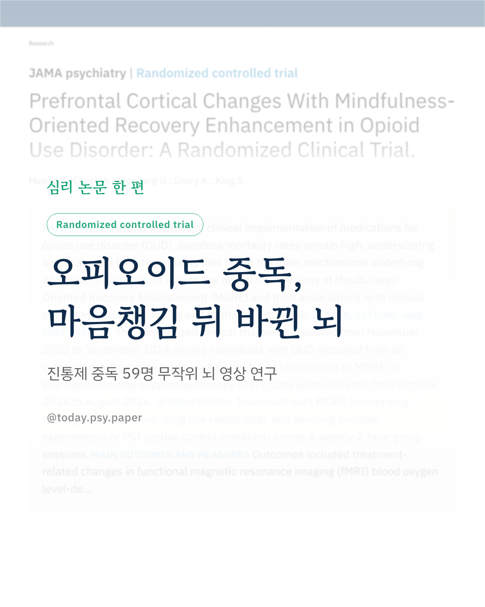
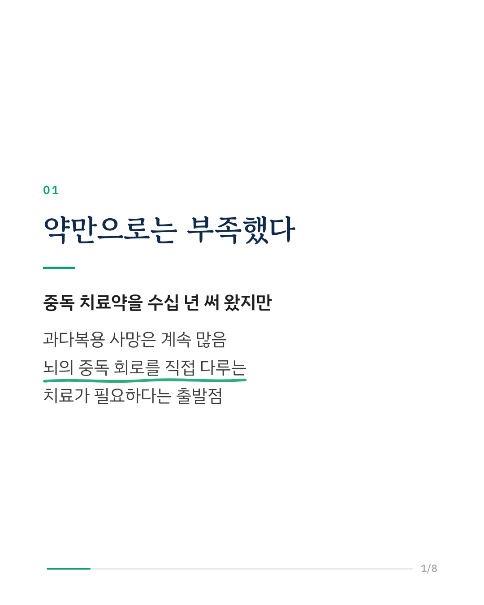
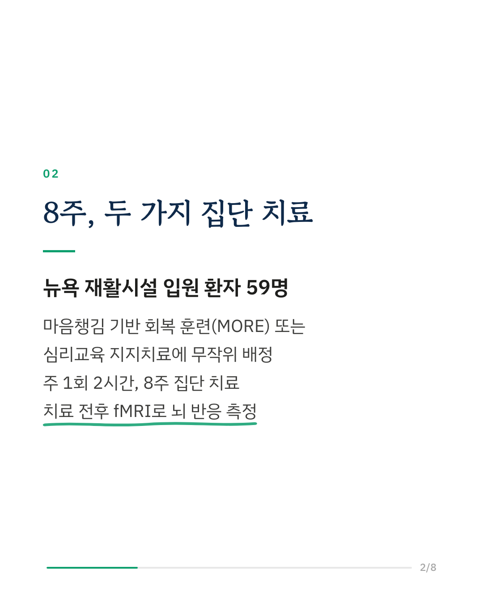
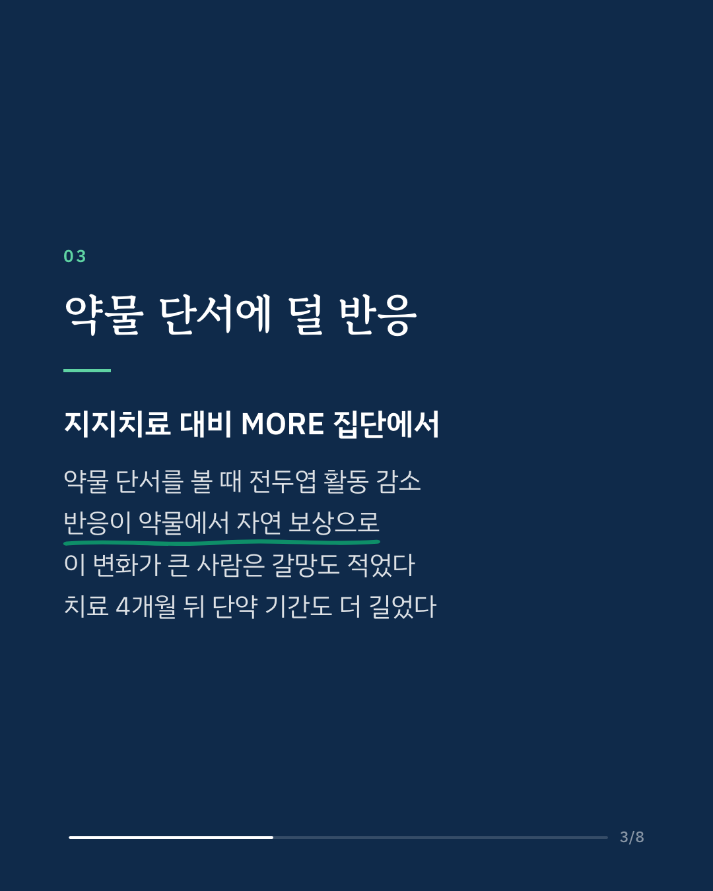
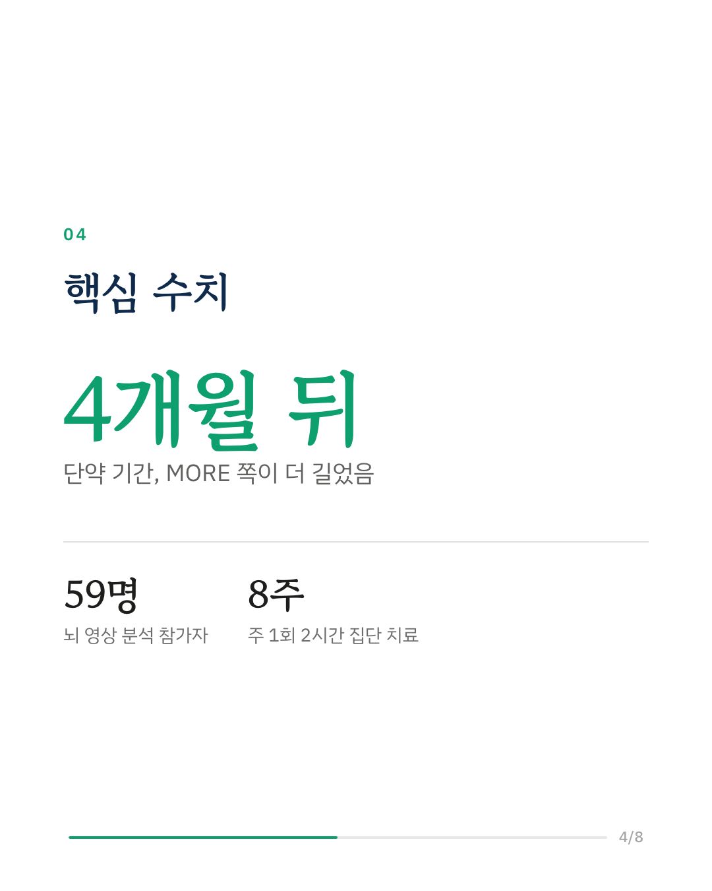
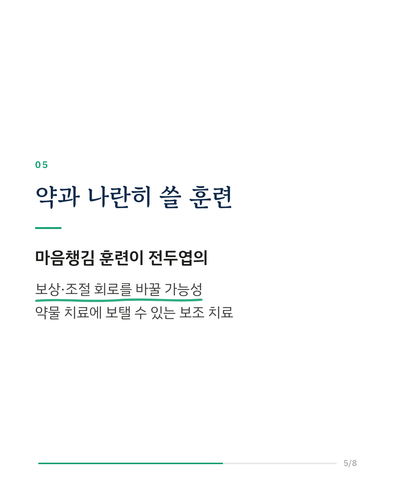
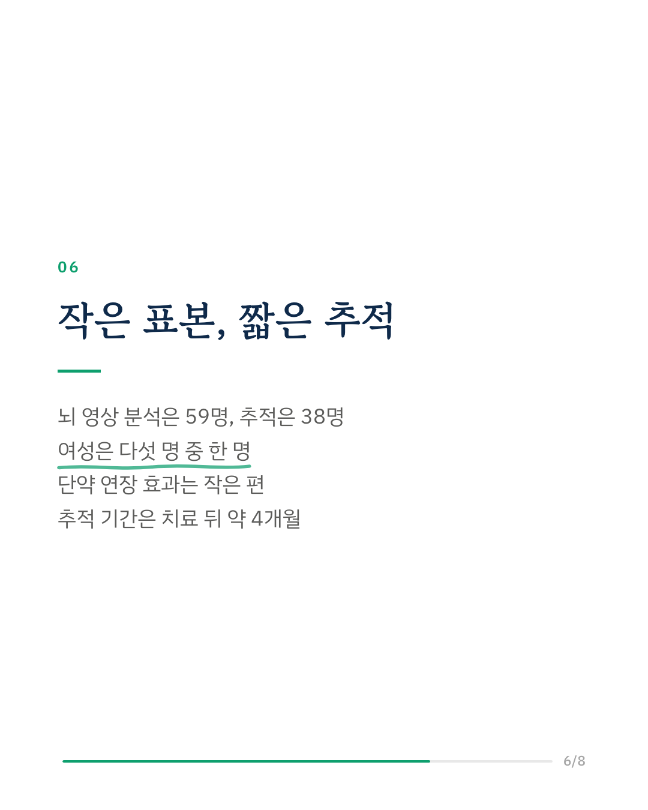
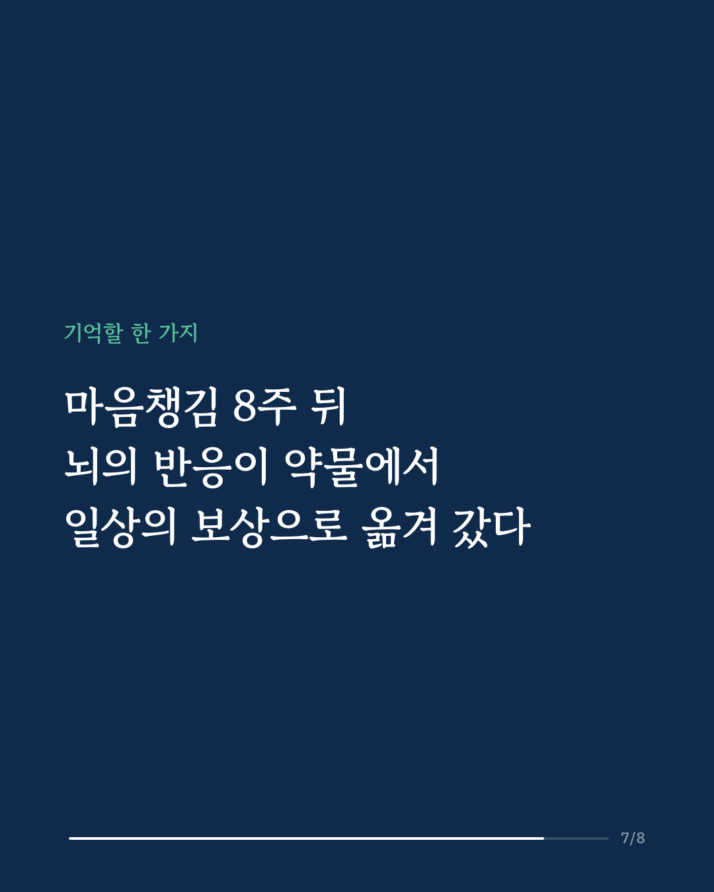
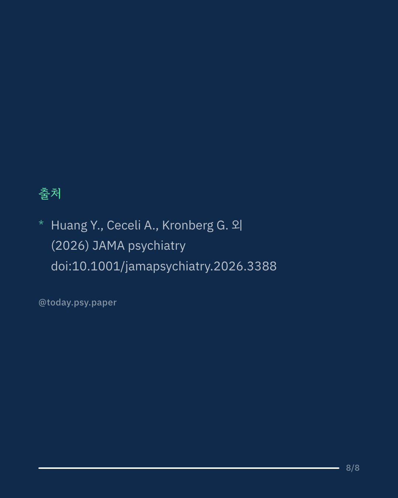

오피오이드 중독은 치료약이 있어도 과다복용 사망이 계속 많은 질환입니다. 이 연구는 마음챙김 훈련이 중독과 관련된 뇌 반응을 실제로 바꾸는지 확인하려 했습니다. 뉴욕의 한 재활시설에 입원한 오피오이드 중독 환자들을 마음챙김 기반 회복 훈련(MORE) 집단과 심리교육 지지치료 집단에 무작위로 나누고, 주 1회 2시간씩 8주 동안 집단 치료를 진행했습니다. MORE는 마음챙김 명상, 약물 단서를 다르게 바라보는 연습, 일상의 즐거움을 음미하는 훈련으로 이루어져 있습니다. 치료 전후 fMRI로 뇌를 찍어 보니, MORE 집단은 지지치료 집단에 비해 약물 단서를 볼 때 중간 전두이랑 등 전두엽 부위의 활동이 줄었습니다. 반응이 약물 단서에서 자연 보상 쪽으로 옮겨 간 정도가 클수록 갈망도 적었는데, 이 관계는 MORE 집단에서만 나타났습니다. 약물이 등장하는 영상을 볼 때 내측 전전두엽이 장면에 동조하는 정도도 낮아졌고, 치료가 끝난 약 4개월 뒤에는 단약 기간이 더 길었습니다. 저자들은 마음챙김 훈련이 보상, 주의, 조절을 맡는 전두엽 회로의 기능을 재구성할 수 있다고 보고, 약물 치료에 더할 수 있는 생물학적 근거를 가진 보조 치료로 제안합니다. 다만 뇌 영상 분석은 59명, 추적 분석은 38명으로 표본이 작았고 참가자 다섯 명 중 네 명이 남성이었습니다. 단약 기간 차이의 효과 크기도 작은 편이었습니다. JAMA Psychiatry (2026), 'Prefrontal Cortical Changes With Mindfulness-Oriented Recovery Enhancement in Opioid Use Disorder: A Randomized Clinical Trial' DOI: 10.1001/jamapsychiatry.2026.3388 #임상심리 #정신건강정보 #심리학연구 #논문리뷰 #마음챙김 #중독치료 #오피오이드 #뇌과학
python3 publish.py 42949709